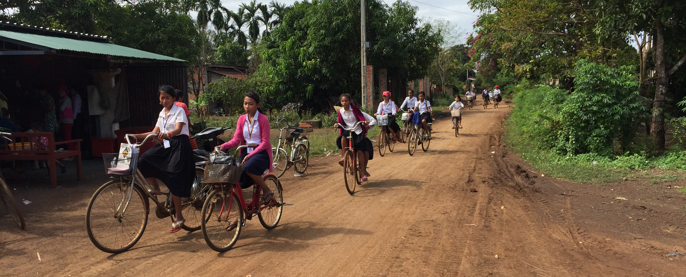
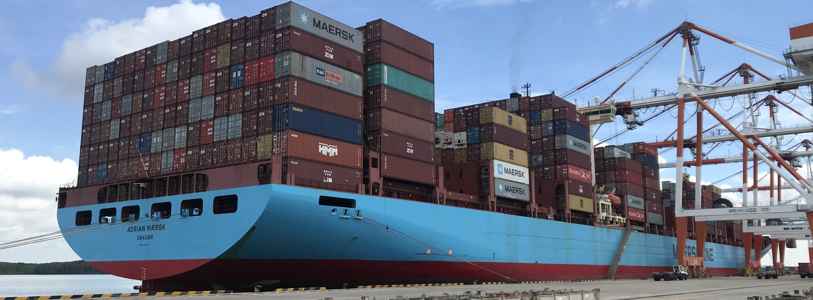

研究内容の紹介
持続可能な社会の実現に向けて，国際的な視点からインフラに関する政策的な研究を行っています．研究成果の詳細は，CV（和文）をご覧ください．
開発途上国・新興国の持続的発展に関する研究

低所得国では，貧困者の多数居住する農村部やスラムの拡がる都市部において，道路，上水道などの基礎的なインフラが不足するために，人々の日常的な生活の質が必要最低限の水準に達していないだけでなく，自然災害に対して脆弱であったり，所得向上の機会に恵まれなかったりするため，貧困状況から脱することが困難になるケースが多く見られます．また，経済発展の著しい新興国に代表される開発途上にある都市や地域においては，新技術の導入などのダイナミックな社会変化が生じている一方で，生活基盤である各種インフラが慢性的に不足し，多様な問題を引き起こしています．基礎的な理論・手法に立脚しつつ，貧困地域・発展途上地域に固有の特性を丁寧に吟味・考慮することによって，都市・地域の問題解決に資する知見を得るための実践的な研究を行っています．
研究成果の例
・Emoto, S., del Barrio Alvarez, D., Setthasuravich, P., Chalermpong, S.,
Thaithatkul, P., Irawan, M. Z., Kato, H. (2026). Urban informal transportation
and gentrification: Empirical evidence from motorcycle taxi in Bangkok,
Thailand. Transportation Research Part A: Policy and Practice, Vol. 211, 105068.
・Sagawa, M., del Barrio Alvarez, D., Alves, L. B. O., Kato, H. (2025). Impacts of BRT introduction on local economy in a developing city: Case study in Brasilia. Transportation Research Record: Journal of the Transportation Research Board, Vol. 2680, No. 6., pp. 1-18．
・Nagashima, F., Kato, H. (2025). Impact of One Tambon One Product program
on household income in Thailand. Journal of Entrepreneurship in Emerging Economies, Vol. 17, No. 6. pp. 1611-1635.
グローバルあるいは広域な観点からのインフラに関する研究

グローバル化が進む中，技術の進展や社会経済の変動に伴い，人・モノ・カネ・情報が国境を越えて自由に行き来できるようになりつつあり，これらを支えるインフラの重要性が増しつつあります．ところが，国際河川，国際海運，国際航空，越境道路・鉄道ネットワークのように複数の国が関係する広域な国際インフラやネットワークは，各地域の持続的な発展にとって不可欠ですが，利害関係が複雑でありそれらの整備や運用には国際的な合意を得ることが困難であるケースが多く見られます．また，内陸国や島嶼国のように世界の中心的な市場から遠く離れた地域では，グローバル化の恩恵を受けられず，経済発展が遅れているケースもあります．そこでは，複数の交通機関間の結節性やいわゆるラストマイルと呼ばれる端末交通リンクのパフォーマンス改善を通じて，マルチモーダルな交通システムを構築することにより，高いコネクティビティを達成することが求められています．これらを踏まえ，地理的に広域の観点からインフラのあり方や交通・物資流動に関する研究を行っています．
研究成果の例
・Silva, J. H., Kato, H. (2026). A cross-country analysis of the influence
of road infrastructure on human development. Transport Policy, Vol. 186, 104246.
・Endo, M., Kato, H. (2025). Impacts of stay-at-home policy under the pandemic
on post-pandemic economic activities: Global evidence from major cities.
Sustainable Cities and Society, Vol. 130, 106559.
・Uchida, K., Kato, H., Murakami, J., Takeuchi, W. (2024). Does new airport investment promote urban economic development?: Global evidence from nighttime light data. Transportation Research Part A: Policy and Practice, Vol. 180, 103948.
日本の海外インフラ展開戦略や技術移転に関連する研究
少子高齢化やインフラ市場の成熟化を受けて，日本国内での新たなインフラ需要の増加が見込めない一方で，成長著しい新興国ではインフラに対するニーズが高まっており，日本で長年培われてきた技術や経験の価値が高まっています．そこで，政府をあげて日本企業の海外への展開や開発援助等を通じた日本の技術移転が進められつつありますが，激しい国際競争にさらされて苦戦を強いられており，依然として課題が多く残されているのが実情です．過去の日本におけるインフラ整備の知見を改めて丁寧に整理するとともに，それをもとに，日本のインフラの海外市場への展開可能性について研究を進めています．
研究成果の例
・Kanai, Y., Wetwitoo, J., Kato, H. (2025). Meta-analysis on indirect impacts
of highway investment: Evidence from Japan. Transportation Research Record: Journal of the Transportation Research
Board, Vol. 2679, No. 2, pp. 991–1002．
・Maharjan, R., Kato, H. (2024). Can logistics and supply chain resilience
strategies minimize the impacts of disruptions? Evidence from Japan. International Journal of Logistics Management, Vol. 35, No. 5, pp.1465-1482.
・Sunio, V., Kato, H., Gaspay, S. M., Napalang, M. S. (2023). International transfer of railway infrastructure through the intermediation of aid agencies. Transportation Research Interdisciplinary Perspectives, Vol. 18, 100765.
交通計画・政策に関する基礎的な研究
人や物資の移動は，社会活動において欠かせない要素の一つであり，それらを円滑かつ安全に実現することは，国・地域・都市の活性化，人々のアクセシビリティ・モビリティの確保，アメニティの改善，ひいては豊かな人生・生活・社会の実現と人類の新たな価値創造への貢献につながることが期待されます．そこで，交通の基礎的な特性の理解，人や企業の交通行動分析，交通計画の策定プロセスの構築，新たな交通関連技術の開発，交通を支えるインフラや制度の設計，持続可能な社会実現に向けた望ましい交通システムのあり方の検討等に関する基礎的な研究を行っています．
研究成果の例
・Tsuchiya, T., Alves, L. B. O., Hussain, B., Kato, H. (2026). Does road
investment reduce average travel time and travel time variability? Empirical
evidence from Japan. Research in Transportation Economics, Vol. 118, 101806.
・Hoang-Tung, N., Thuy, L. H., Viet, T. N., Kato, H. (2025). Traffic congestion
and ride-hailing booking: Evidence from Hanoi, Vietnam. Journal of Transport Geography, Vol. 129, 104422.
・Adachi, H., Kato, H. (2024). Interview-based analysis on impacts of COVID-19
on interurban business trips in Japan. Transportation Research Record: Journal of the Transportation Research
Board, Vol. 2678, No.12, pp.1-12.
CV（和文）｜教育（講義等）｜社会的貢献｜最近の研究｜研究内容の紹介｜その他